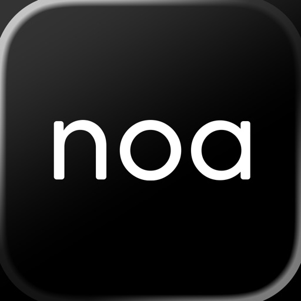

Senior Product Manager
Senior Product Manager at a 70M+ ARR consumer subscription platform that makes public records and open-source intelligence accessible through six global lookup products.
- Leading product strategy and execution across reverse phone, email, image, people, VIN and business-entity lookup experiences.
- Building clearer, faster search and report experiences for a platform used by more than 10 million people.
Sr. Product Manager, AI Product Builder
Freelance
Product management and growth consulting for early-stage startups, and launching my own iOS and macOS apps portfolio.
- Advised and conducted UX audits for small stealth startups launching new apps, including noa fit, a coach-led fitness app with personalized programs across strength, Pilates and mobility.
- Launched Solora, an AI-powered weather and astro forecasting app featured by Apple as a Favorite for iOS 26.
- Launched Olamar, an AI marine weather app that reached #1 in the Playas category on the Spanish App Store.
- Launched Podpin, an AI-powered podcast player for listening, highlighting, bookmarking and rediscovering important moments.
- Launched Cogno, an AI-powered tracker and discovery product for movies, series, books, anime and manga.
- Built Dinata, a profitable text-to-speech app for people with speech impairments.


